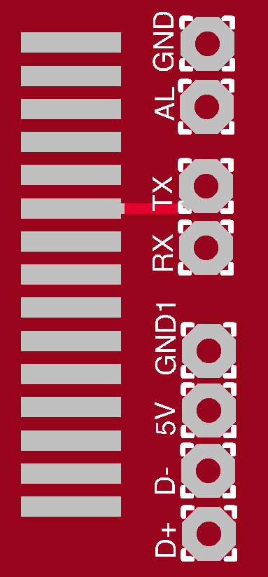
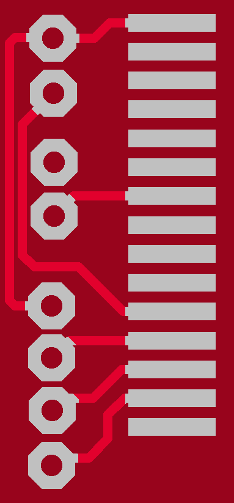

Atrix
A simple Apple 30pin breakout that just gives you sync and serial. Atrix was designed to both replace and simplify the old PodBreakout, which has been discontinued for a while.
Please note; At this time, I have not received these parts yet for testing, so use at your own risk.
Mockups


How-to
What you'll need;
- 1x FT232RL Breakout board (Sparkfun)
- 1x 470k resistor
- 2x USB-A to USB mini-B cables (Amazon, Frys, etc.)
- 1x Atrix board (OSH Park can manufacturer three of these for ~$1 w/ free shipping)
- Soldering equipment (Amazon, Frys, Sparkfun, Adafruit, etc.)
- Male iPod Connector (Sparkfun)
- Colored wire (doesn't have to be colored but it makes things less confusing if you use separate colors)
Serial
- Prepare three 2 inch lengths of colored wire preferably green, white, and black
- Solder accordingly to Atrix;
- Green to TX
- White to RX
- Black to GND
- Solder accordingly to the FT232RL board
- Green to RX
- White to TX
- Black to GND
Sync
- Prepare a USB-A to USB mini-B cable by cutting the USB-B side off, exposing the four wires (red, black, green, white)
- Solder accordingly to Atrix;
- Red to 5v
- Green to D+
- White to D-
- Black to GND (GND1 is provided to you because it's easier to solder these pins right next to each other)
- You're all set, try plugging in the USB into your computer and the 30pin into your target device to see if your computer identifies your target device.